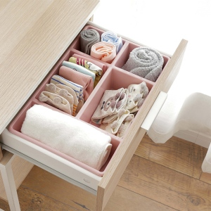
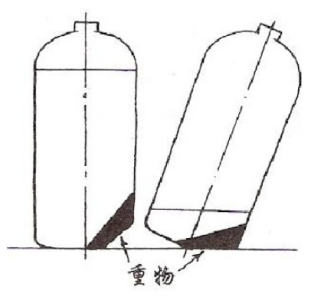

设计方法学 Design Methodology
Table of Contents
1 设计方法学概述
1.1 方法论的发展
四个时期：自然哲学时期 | 分析为主的方法论时期 | 分析与综合并重的方法论时期 | 综合方法论时期
1.1.1 自然哲学时期
从古代朴素自然观到16世纪近代科学的产生
- 人们将世界看做一个混沌的整体，表现为哲学、自然科学和方法论三者没有分开。
- 这一时期方法论的最高成就是亚里士多德的逻辑学和欧几里得几何学中的方法论思想。
1.1.1.1 亚里士多德的逻辑系统以三段论为核心
- 如果所有B是A
- 并且所有C是B
- 那么所有C是A
1.1.1.1.1 演绎推理
- 如果所有人都是要吃饭的
- 并且所有中国人都是人
- 那么所有中国人都是要吃饭的
1.1.1.1.2 归纳推理
从个别到一般的过程
- 假如技术娴熟的舵工是最有能力的舵工，
- 技术娴熟的清洁工是最有能力的清洁工，
- 那么一般地说，技术娴熟的人就是在某一特定方面最有能力的人
- （白天鹅与黑天鹅?）
1.1.1.1.3 归谬法
归谬法先规定它所要反驳的命题，然后用它推出一个公认的谬误。
1.1.1.1.4 例证法
包括演绎、归纳与类比的一种推理方法
1.1.1.2 欧几里德几何方法论
把公认的一些几何知识作为定义和公理，在此基础上研究图形性质，推导出一系列定理，组成演绎体系。
- 1、任意两个点可以通过一条直线连接。
- 2、任意线段能无限延长成一条直线。
- 3、给定任意线段，可以以其一个端点作为圆心，该线段作为半径作一个圆。
- 4、所有直角都全等。
- 5、若两条直线都与第三条直线相交，并且在同一边的内角之和小于两个直角和，则这两条直线在这一边必定相交。
其中公理五又称之为平行公设（Parallel Postulate），叙述比较复杂，并不像其他公理那么显然。这个公设衍生出“三角形内角和等于一百八十度”的定理。 并非必然的几何真理，也就是“三角形内角和不一定等于一百八十度”，从而发现非欧几里得的几何学，即“非欧几何”（non-Euclidean geometry）。
1.1.2 分析为主的方法论时期
从16世纪经典力学建立到19世纪初期。
- 这一时期自然科学相继分化出来，并形成各自的研究方法，
- 而哲学则担当了方法论的职能，哲学的范畴、原理、世界观都作为自然科学研究的方法论出现。
- 1620年，培根的《新工具》探讨了新的认识方法 (经验归纳法)，成为归纳法的基础，推动了近代科学的发展。
- 笛卡尔在《谈方法》一书中提出唯理论的演绎法，突出了理性的推理与分析。这些方法都是以分析为主的哲学方法论。
1.1.3 分析与综合并重的方法论时期
从19世纪40年代到20世纪中叶
- 一方面: 分析方法论有了重大发展
- 另一方面: 自然科学实现两次重大综合
1.1.3.1 分析方法论的重大发展
数理逻辑和分析哲学作出重要贡献。
1.1.3.2 自然科学的重大综合
- 能量守恒和转化、细胞学说和进化论在很大程度上实现了宏观领域自然科学的综合;
- 相对论和量子力学理论的创立实现了宏观和微观的理论综合；
- 这一时期，综合的思维方式日益受到重视。
1.1.4 综合方法论时期
从20世纪中期开始
- 出现许多综合学科，如各种边缘学科、横断学科 (系统论、控制论、信息论)、综合性学科 (环境科学、能源科学、航天科学等)。
- 这些学科的迅猛发展极大促进了综合方法论的发展。
1.1.5 社会化创新模式
经验和知识 –设计(思考)–> 创新 –> 新知识
- 文化知识 – 个人创作 – 社会活动
1.2 设计方法学定义
设计方法学是研究解决设计问题的进程的一般理论。
- 包括一般设计策略及用于设计工作各个具体部分的方法措施；
- 主要领域包括进程模式、进程规划、进程风格、方法、方法学及行动规划、工作方法、工作原则等。
1.3 现代设计方法
突变论方法 | 信息论方法 | 系统论方法 | 离散论方法 | 智能论方法 | 控制论方法 | 对应论方法 | 优化论方法 | 寿命论方法 | 模糊论方法 | 艺术论方法
设计是一种创造性的活动，其目的是为物品、过程、服务以及它们在整个生命周期中构成的系统建立起多方面的品质。
- 生产力的发展与变革，引起了科学交叉、综合及各种科学方法论的发展与变革。
- 设计是实现事物发明创造的过程，设计创新寓于现代科学方法论之中。
- 现代设计的主要特点是优化、动态化、多元化及计算机化。
1.3.1 突变论方法
突变论研究非线性系统从一种稳定组态跃迁到另一种稳定组态的现象和规律。
- 玻璃瓶放置状态的突变: 稳定态->非稳定态->稳定态
- 突变论是混沌理论（Chaos Theory）的一部分
1.3.1.1 渐变和突变
- 前者如植物正常生长,行星绕太阳运行;后者如火山爆发、地震、新星爆发、股票暴跌、爆款产品。
- 连续性范畴和间断性范畴的区别（波粒二相性？）
1.3.1.2 突变类型
- 劣型
- 优型
1.3.1.2.1 劣型
普通意义的突变：系统遭到了破坏并不可逆转地让位于另一个系统
1.3.1.2.2 优型
突变论意义的突变：突变没有使系统消灭,是系统得以“生存的手段”,它帮助系统脱离通常的特征状态。

财富来源于更好地突破现状、把握未知，而非更好地完善已知（当然，完善已知也可创造财富）
突变是摆脱积重难返的现有产品系统巨大惯性的唯一出路
- 一刀两段、一刀斩乱麻
1.3.1.3 突变与设计的两点关系
- (关键)细节决定成败
- 寻求“满意解”而非“最优解”
1.3.1.3.1 细节决定成败
蝴蝶效应现象，是指事物发展的结果对初始条件和边界条件具有极为敏感的依赖性。初始条件极小的偏差将会引起结果的巨大差异（龙卷风）。
- 大停电事故，造成了60亿美元的直接损失。经联合调查小组的专家证实，其原因却非常简单，不过是一些长得过分茂密的树丛使俄亥俄州克里夫兰附近的电线短路。
1.3.1.3.2 寻求“满意解”而非“最优解”
当断不断，必为所乱。在做决策的时候，不追求绝对最优的决策，转而追求简洁高效的满意解甚至非劣解（Pareto解）即可。
- 突变论也指出高度优化的设计（最优解）很可能有许多不理想的性质，因为在结构上、性能上追求最优，常常鲁棒性很差，稳定性不高，对方案中可能的缺陷具有高度敏感性。
1.3.1.4 突变与设计方法
各种创造性设计法：头脑风暴法、逆向发明法、灵感法等，均能产生罕变机理。
1.3.2 信息论方法
1.3.2.1 信息的定义
- 信息是确定性的增加-—逆Shannon信息定义；
- 信息是物质、能量、信息的标示-—Wiener信息定义的逆;
- 信息是事物及其属性标识的集合。
1.3.2.2 信息量的确定
一个事件给予人们的信息量多少，与这一事件发生的概率(可能性)大小有关。
- 一个小概率事件的发生，如“唐山发生七级以上大地震”使人们感到意外，它给人们的信息量就很多。
- 相反一个大概率事件的出现，如“12月15日北京下雪”给人们的信息量就很少。
1.3.2.3 信息论
信息论是一门用数理统计方法来研究信息的度量、传递和变换规律的科学。它主要研究信息的获取、变换、传输、处理等问题。
- 扩展为一门研究信息的产生、获取、变换、传输、存储、处理、显示、识别和利用的信息科学。
- 常用方法有预测技术法、信号分析法 (相关分析法、方差分析法、状态方程分析法)、信息合成法等。
1.3.2.4 信息系统的主要性能指标
有效性和可靠性
- 有效性就是在系统中传送尽可能多的信息；
- 可靠性是要求信宿收到的信息尽可能地与信源发出的信息一致，或者说失真尽可能小。
- 但，可靠性和有效性往往相互矛盾，应使系统在规定的失真或基本无失真条件下，传送最大的信息率。
1.3.2.5 语法、语义、语用信息
语义应考虑各符号的意义，同样一种意义，可用不同语言或文字(语法信息)来表示。
- 一般，语义信息率可小于语法信息率；例: 电报信息率可低于表达同一含义的语声的信息率。
- 更进一步，信息接受者往往只需要对其有用的信息；听不懂的语言或有意义，但对接受者也是无用的。所以语用信息一般又小于语义信息。
1.3.2.6 信息方法的特点
用信息概念作为分析和处理问题的基础
- 撇开研究对象的具体结构和运动形态,
- 把系统的有目的性运动抽象为信息变换过程。
1.3.2.7 信息方法的准则
- 功能准则
- 整体准则
1.3.2.7.1 功能准则
运用信息方法对复杂事物进行研究时,
- 不需要对事物的具体结构加以解剖性的分析,
- 而是对其信息流程加以综合性的考察,
- 着眼于该系统在与环境交互作用过程中的动态功能,从而获得关于事物整体的知识.
1.3.2.7.2 整体准则
- 信息方法不是割断系统的联系,不是用孤立的、局部的、静止的方法研究事物,
- 也不是那种在剖析的基础上进行简单的机械综合,
- 而是直接从整体出发,用联系的、全面的、化的观点去综合分析系统运动过程.
1.3.2.8 信息方法的作用
- 揭露不同物质运动形态之间的信息联系
- 信息方法为科学技术、生产过程、社会管理提供有效手段
- 信息方法揭示事物运动的深层规律
- 提高人们掌握和运用客观规律的能力
1.3.2.8.1 揭露不同物质运动形态之间的信息联系
人脑和机器
- 人脑是一百多亿种细胞组成的，神经细胞可以处于兴奋和抑制两种状态。
- 而电子计算机是由许多电子器件组成的机械，相应地有接通和断开两种状态。
- 人脑工作的特征是利用神经脉冲，而机器可以利用电脉冲。
- 机器与人脑都具有从外界获得信息、加工处理、传递信息的能力，它们存在着共同的信息联系，可以把它们看做是一个信息变换的系统。
- -> 机器模拟人脑
1.3.2.8.2 信息方法为科学技术、生产过程、社会管理提供有效手段
例，铁路运输管理，其中有许多具体变化难以事先预测。
- 需要根据线路、货栈、机车、车辆、装卸能力、运行时间和流向等情况，把各种信息加以综合处理，
- 以获得最合理、最经济的调度方案，并不断加以调整。
1.3.2.8.3 信息方法揭示事物运动的深层规律
许多以往让人无法理解的病变和症状，正是由于遗传信息密码及组合发生了变化
1.3.2.8.4 提高人们掌握和运用客观规律的能力
动物之中具有完整的发送和接受信息的生物通讯系统。
- 它们通过气味、姿态、色彩、超声波、电磁场等多种形式，互相递送信息。
1.3.3 系统论方法
以系统整体分析及系统观点来解决各领域具体问题。
- 系统是由若干要素以一定结构形式联结构成有某种功能的有机整体。
- 步骤：系统分析(管理) -> 系统设计 -> 系统实施(决策)
- 具体方法：系统分析法、逻辑分析法、模式识别法、系统辨识法等。
- 学科分支：管理系统工程、环境系统工程、人才系统工程、产品系统开发工程（内外因素和生命周期）
- 系统分析方法有：投入产出法、相关表法、PERT法、因果分析图法、雷达图分析方法、关联图法和矩阵图法

1.3.3.1 投入产出法
Input-Output Technique 输入输出法
- 通用电器公司用于探求设想。
- 确定期望产出(结果和目标,明确输入输出) -> 决定投入 -> 利用智力激励法寻求投入产出关系。
- 同时确定限制条件，如成本不超过某值、坚固耐用等。
1.3.3.1.1 例: 天黑灯自亮问题
- 输入: 天黑下来, 输出: 灯自亮
- 根据入、出和限制条件，考虑相互关系，
- 运用创造性思维和逐步推敲明确入和出联系，分析出解决问题方案。

1.3.3.2 相关表法
探讨设计问题中相关要素间关系为目的
- 分解设计问题 -> 分析比较 -> 明确主次问题 (关系最重要、希望产生关系和无关系)
- 例：街道清扫系统要素相关表
1.3.3.3 PERT法
Program Evaluation and Review Technique 评测复审法
- 有效应用PERT法可缩短工期，提高效率。
- 包括PERT/TIME、PERT/MAN-POWER和PERT/COST (时间、人员、费用)

1.3.3.3.1 利用PERT制订计划方法
- 基本图示符号
- 规则
- 基本步骤
- 圆圈: 事件结点，不需时间和资源。圈内为作业名称或数字
- 箭头线: 作业过程
- 虚箭头线: 两结点间无实际作业，仅示先后顺序
- 箭头线顺序发展（无回路）
- 结点编号逐渐增大，可跳号以补充修改作业，但不可重复编号。
- 符合实际工作程序。

- a. 制订整体计划 (时间、人、物与资金)
- b. 分析确定所需全部作业项目
- c. 构造网络
- d. 计算日程
- e. 配置资源
- f. 预算费用
- 在估计时间、资源等问题时，可按乐观、悲观、最可能情况估算，取平均值Te=(a+4m+b)/6
- 例：乐观3天完成、悲观10天完成、最可能5天完成 -> (3+4*5+10)/6 = 5.5天
1.3.3.3.2 大型儿童游乐玩具项目设计计划
应将时间、人员、费用，及资源配置等因素估计或计算进去，以使系统开发工作过程得到有效控制。
- a 调查准备 (a1准备调查记录本卡;a2研究调查场所;a3确定调查人员;a4准备调查用具。)
- b 实地调查 (b1现状调查;b2资料整理。)
- c 收集有关大型游乐玩具资料 (c1杂志、商品选购指南;c2市场上有关玩具。)
- d 有关儿童身体发育资料 (d1图表化处理;d2按年龄等分类处理。)
- e 活动分析 (e1活动种类;e2动作分析;e3把握活动意义。)
- f 分析游乐时使用物品 (f1分析物品;f2物品特征;f3分析游戏与物品关联性。)
- g 综合化 (g1:d、e、f关系明确化;g2图形化。)
- h 展开 (h1意念性草图;h2比较 c、g;h3设计定位;h4草模。)
- i 基本设计 (i1基本形态、结构确定;i2预想图绘制;i3细部审核;i4修正。)
- j 制作模型 (j1绘制模型工程图纸;j2选择模型材料;j3模型制作完成;j4拍摄模型照片;j5对模型审核。)
- k 评价
- l 试销准备 (l1创意和设想;l2调查;l3根据调查结果修改设计预想图;l4修改或重新制作模型;l5信息整理。)

1.3.3.4 因果分析图法
Cause and Effect Diagram 鱼骨图
- 以图示方法揭示关系而认清相关因素间影响。
- 着眼问题结果和对问题结果产生影响的原因。
- 箭头顶端表示设计问题或其它问题要点，大、中、小骨分别表示大、中、小原因。
1.3.3.4.1 绘制鱼骨图方法
- 确定问题要点 (要分析项目)，如机械加工为什么出现废品。
- 确定大原因，如机床、方法、操作者等。
- 继续找出中原因和小原因及更细原因。
- 对关键原因作标记以便进一步研究。(鱼骨图可转化成树形图)


1.3.3.5 雷达图分析方法(radar chart)
一种多变量对比分析技术,形似导航雷达图或蜘蛛网。
- 雷达图可对多组变量多种项目对比,反映数据相对中心点和其它数据点变化情况。
- 适于对多属性体系结构描述对象作出全局、整体评价(如：判断产业发展趋势、确定产业范围边界)

1.3.3.5.1 图示说明
- 档次渐高,边缘为最高档,由若干同心圆组成。
- 同心圆向外引若干条射线,等间距。
- 每个圆代表一定分值,由中心向外分值增加。
- 每条射线末端标明指标。

1.3.3.5.2 例：产品功能属性用户评价雷达图
功能性(实用)、技术性、艺术性(造型)、舒适性(人机)、经济性(性价比)、环保性等评价。
1.3.3.6 关联图法(网络)
分析原因一结果、目的一手段等各因素间互相影响、制约
- 据逻辑联系，寻求最有效解决措施。
- 箭头由原因指向结果，或由手段指向目的，或由因素指向问题等。
- 重点项目可用双框。

1.3.3.7 矩阵图法
- 运用矩阵形式多维分析。将问题分解，找出全部因素并分类，
- 把属于因素群R的因素R1、R2、…、及属于因素群L的因素L1、L2、…、排成行和列，
- 在行和列交点处表示出设想点，据以探求问题所在及解决问题方法。


1.3.3.8 作业一
- 选择3~4款产品运用至少一种分析方法（比如雷达图分析方法、矩阵图法等）进行分析比较，明确各自优缺点；
- 根据分析结果，结合产品基本功能结构分解（可用功能结构系统图表示），再重组升级为新的设计方案（只需表达清楚概念和产品结构关系，可手绘草图或相关软件表达）
- 做成PPT，9月12日(周四)23:00前发送到anhongz@outlook.com
- 文件名: DM1-标题-姓名
- 文件类型: 演示文稿或PDF文档
1.3.4 离散论方法
与系统论方法相对，将复杂、广义的系统离散为分系统、子系统、单元
- 以求得总体的近似与最优解。
- 常用方法：微分法、隔离体法、有限单元法、边界元法、离散优化法等。
1.3.4.1 有限单元法


1.3.4.2 边界元法
BEM(boundary element method，边界元法)是一种继有限元法之后发展起来的一种新数值方法
- 与有限元法在连续体域内划分单元的基本思想不同，边界元法是在定义域的边界上划分单元，用满足控制议程的函数去逼近边界条件。
- 所以边界元法与有限元相比具有单元的未知数少，数据准备简单等优点。
- 但用边界元法解非线性问题时，遇到同非线性项相对应的区域积分，这种积分在奇异点附近有强烈的奇异性，使求解变得困难。
1.3.4.3 离散优化法
离散优化问题，又称为整数规划 (线性整数规划)
- 纯整数规划: 全部决策变量取整数值；
- 混合整数规划: 允许一部分决策变量连续，其余决策变量取整数值；
- 二进制(0-1)规划: 限制全部决策变量不是0就是1。
1.3.4.3.1 背包问题 (Knapsack problem)
给定一组物品，每种物品都有自己的重量和价格
- 在限定的总重量内，我们如何选择，才能使得物品的总价格最高？
- 即：在总重量不超过W的前提下，总价值是否能达到V？


1.3.5 智能论方法
运用智能理论，采取各种方法、工具去认识、改造、设计各种系统。
- 常用方法：计算机求解、设计、控制; 机器人技术、仿生物智能(swarm intelligence, neural networks (machine learning), evolutionary algorithm)、专家系统等。
- 应用：计算机辅助设计

1.3.5.1 生成设计 Generative Design

1.3.5.2 进化设计 Evolutionary Design

1.3.5.3 群体智能 Swarm Intelligence

1.3.6 控制论方法
研究动态的信息与控制、反馈过程，以使系统在稳定的前提下正常工作。
- 将系统、过程和运动看成一个复杂的控制系统 (自动化技术)。
- 常用方法：动态分析法、柔性设计法、动态优化法、动态系统辨识法等。

1.3.6.1 控制论基本原理
据系统与环境关系，用“输入”(环境对系统的作用)和“输出”(系统对环境的响应)揭示和描述系统行为，达到认识和控制该系统的目的。
- 负反馈：通过负反馈信息实现自稳控制，当正常运转的系统受到外来干扰而偏离稳定点时，利用控制系统的负反馈信息调节，维持系统按控制所要达到的目的而运行。
- 正反馈：当系统需要由旧质态转变到新质态时，就通过正反馈信息进行自组控制，改变系统的结构和行为方式，经过重组形成新的稳定系统，适应环境。
1.3.7 对应论方法
各类事物间存在某些共性或相似的恰当比拟，具有大量而普遍的对应性。
- 以相似或对应模拟作为思维和设计方式的科学方法，即为对应论方法。
- 常用于已有成熟的参照对象而尚未掌握设计对象性状的各种情况。
- 如科学类比法、相似设计法、模拟设计法、建模技术、符号设计法等。
1.3.7.1 类比
1.3.8 优化论方法
用数学方法在给定的多因素、多方案等条件下得到尽可能满意的结果。
- 包括线性和非线性规划、动态规划、多目标优化等优化设计法、控制法、试验法。

1.3.9 寿命论方法
功能与其使用时间，成本之间存在密切关系。
- 以产品使用寿命为依据，保证寿命周期内的经济指标与使用价值，同时谋求可靠性与经济效益。
- 可靠性分析法，可靠性设计法，功能价值工程与价值创新等。

1.3.10 模糊论方法
将模糊问题进行量化解题。
- 主要用于模糊性参数的确定、方案的整体质量评价等。
- 常用方法：模糊分析法、模糊评价法、模糊控制法、模糊设计法等。

1.3.11 艺术论方法
以艺术美感作为出发点，使技术与艺术、科学与美学、创造与工艺紧密联系。
- 主要用于系统、子系统、单体的形态设计、结构设计和表面处理等。
2 TRIZ创新方法
2.1 拆分
需要整理复杂的情况,或者希望打破顾此失彼的矛盾状态时,最有效的做法是将问题分开考虑。
- 易拆->不易拆：分割->分离->局部质量->不对称
2.1.1 分割Segmentation
分割对象：空间、时间、错综复杂的问题。
- 遇到棘手问题时，可以首先尝试对情况或者对之前的方法进行分割。
- 空间分割 / 时间分割
2.1.1.1 空间分割
- 将物体分成相互独立部分
- 使物体分成易组装和拆卸部分
- 增加物体分割程度
2.1.1.1.1 将物体分成相互独立的部分
多级和多个助推器串并联
- 每级工作结束后可抛掉，获得加速性能，逐步达到预定速度；
- 各级发动机独立工作，可按每级飞行条件设计发动机，处于最佳工作状态；
- 灵活选择每级推力大小和工作时间，以适应轨道要求及载人飞船对飞行过载的要求。

分割为多个车厢，可根据不同时间段的需要配置车厢数量。

- 用墙壁分成客厅、卧室、浴室等，使卫生间或卧室等与生活空间分开，便于居住。
- 宽敞的房间用隔扇分隔，可根据不同用途灵活使用。
分为冷冻室和冷藏室，并分多层

小格子使食物不串味，且提高强度。
为了便于分割压出凹槽，可以让操作变得更容易。
- 板状巧克力上压有凹槽，很容易掰开。




2.1.1.1.2 将物体分成容易组装和拆卸的部分
通过在考虑组合的基础上分割成多个部分，可以提高适应性和灵活度。
- 方便搬运, 并视空间与个人喜好，重新结合成不同形状


2.1.1.1.3 增加物体的分割程度
分割成更细或更小的单位

浮法玻璃：熔融玻璃从池窑中连续流入并漂浮在相对密度大的锡液表面上，在重力和表面张力的作用下，玻璃液在锡液面上铺开、摊平、形成上下表面平整、硬化、冷却后被引上过渡辊台。辊台的辊子转动，把玻璃带拉出锡槽进入退火窑，经退火、切裁，就得到浮法玻璃。

2.1.1.2 时间分割
利用有限资源。通过时间的分割，可以让很多人共用一个资源。
- 预约使用会议室或文化馆
- 计算机的CPU处理等
2.1.1.3 联想词语
分、分类、分场合、细分、分要素、分隔、时间分割
- 制定日程、零部件、水平分工、磨成粉末、纳米
- 分格便当盒、板状巧克力、咖喱调料块、咖喱粉、电车车厢配置
- 使用会议室的时间段、CPU处理
2.1.2 分离(拆出/抽取)Extract/Taking off
花费能量或时间，把事物分成两个以上（将物体中有用或有害部分提取出来）。
- 分割原理用于较易拆分事物，而分离原理强调消耗能量去分离、消除或提取。
- 遇到问题时，可考虑空间分离、时间分离、条件抽取。
2.1.2.1 抽出负面影响的部分或不需要的属性
2.1.2.1.1 避雷针将雷电引入地下，减少其危害
2.1.2.1.2 将有噪音的空调压缩机放在室外
2.1.2.1.3 食品真空包装

2.1.2.1.4 泡茶器把茶叶隔离


2.1.2.2 从物体中抽出必要的部分或属性
2.1.2.2.1 把彩喷打印机中的墨盒分离出来以便更换

2.1.2.2.2 用光纤分离主光源，增加照明点


2.1.2.2.3 隐形眼镜即是眼镜架与镜片离散后的新产品

2.1.2.2.4 音箱是扬声器与收录机整体的离散

2.1.2.2.5 活字印刷即是原来整体刻板的分离

2.1.2.2.6 搜索引擎

2.1.2.3 联想词语
限定、提取、隔离、集锦、去除、选拔、替换、压缩、煎煮、过滤、沉淀、以外
- 提取对象物、撇去浮沫、茶、三角形垃圾桶、人车分离式信号灯
- 去除有害物质、清理垃圾、数据化、缩印版
2.1.3 局部质量Local quality
想拆分却无法拆时，通过改变局部性质，可以实现有所区别的操作。
- 无法分开或不宜分开的情况下，有时可以有所偏重，分成浓度高的部分和浓度低的部分。
- 在物体的特定区域改变其特征，从而获得必要特性。
2.1.3.1 变同质(一致)结构为异质(不一致)结构
若整体成本太大，可改变局部或有所偏重来解决问题
- 采用温度、密度或压力梯度。不必冷却所有地方，只冷却需要冷却的部分，节约能量。
- 该原理与“#35参数变化原理” 组合使用，有时可能会解决问题。
2.1.3.1.1 刀面和刀刃
- 刀刃用硬度高、耐磨好钢，其余部分用一般钢

2.1.3.1.2 书页和封皮
- 封面用较厚和耐用纸，内部用一般纸

2.1.3.1.3 高尔夫球杆
高尔夫球杆的重量主要集中在球杆头部分(有所偏重的局部质量-网球拍)。
2.1.3.1.4 杯子切口
增加杯子切口，防止倒水泄漏

2.1.3.1.5 提高物体某一部分"浓度"不局限于物品。
- 零售商店的限时促销是只在一定时限内进行的强化宣传。
- 只对一部分收费会员赠送礼品的服务。


2.1.3.2 使组成物体不同部分实现不同功能
2.1.3.2.1 多功能锤
锤子一边做成平的一边做成扁的，增加锤子的切削功能
2.1.3.2.2 多功能削皮器
2.1.3.2.3 瑞士军刀

2.1.3.3 物体每一部分均处于最有利于其工作的条件
使组成物体每一部分最大限度发挥作用。
2.1.3.3.1 带橡皮铅笔
2.1.3.3.2 带起钉器榔头（起钉锤）

2.1.3.3.3 午餐盒被分成放热食、冷食及液体空间
- 餐盒格子，防止串味
2.1.3.3.4 汤勺每一部分都有相应的工作条件

2.1.3.3.5 多角橡皮
把局部性质扩大到整体。 在橡皮上制造出多个“角”的部分，更容易擦掉细小的地方。
2.1.3.4 联想词语
张弛、偏重、极端、浓缩、部分的、有特征的、仅一部分、变形、强化、
- 暂时的、限定的、附加费、限时促销
- 高尔夫球杆、多角橡皮、纸币（水印、凹凸、局部光泽、嵌入文字）
2.1.4 不对称Asymmetry
在设计物品时，一般画成大小对称形。但此举行不通时，可通过不对称因素来解决问题。
- 物体对称形式转为不对称形式。
- 若物体不对称，则加强不对称程度。例：防撞汽车轮胎有高强度侧缘，以抵抗人行道路缘石碰撞。
2.1.4.1 防止错误连接
2.1.4.1.1 HDMI端口或微型USB连接器
为防止插反，把连接器做成梯形或设置突起。如果设置提示，则更能顺利无误地连接。
- 没有做成长方形或圆形等对称形，而是略微不对称。确保连接器以正确方向插入。
- USB怎么都插不进去而烦躁的经历，因为这种连接器的外观乍看上去呈对称的长方形。
2.1.4.1.2 存储卡(SD卡)
四个角中的一角缺失，可以便于人们弄清插入的方向，防止插反。

2.1.4.1.3 电源插头
做成不对称形式，防止插错
2.1.4.2 方便操作
2.1.4.2.1 杯子带有把手
2.1.4.2.2 球棒
握在手里的部分和击球部分的粗细不同，呈不对称形状。

2.1.4.2.3 摄像机
为了便于单手持握，只在一侧安有皮带。

2.1.4.2.4 汽车加速踏板和刹车踏板形状不同

2.1.4.2.5 将液化气瓶底部设计成斜面，气用完时会自己倾倒

2.1.4.2.6 电力治炼做电极非对称置于炉中
方便矿石送入和金属溶液流出。

2.1.4.3 产生多样性
列车座位排列成不对称的一侧3个、另一侧2个
- 满足3个人、4个人、5个人、6个人等不同人数需求。

2.1.4.4 获取动力
不对称的形态还有可能由此得到重力、电力等产生的动力。
- 电池通过电极金属的不对称性状态产生电力。
- 柠檬里插入不同金属可以成为电池，不对称性能够产生能量。

2.1.4.5 杠杆原理
通过距离支点的不同距离，实现输出更大的力，使移动距离更大等目的。


2.1.4.6 利于稳定
做成不对称形状则可以取得平衡，变得稳定。
- 公路转弯处外高内低, 消减离心力
- 铁道转弯处内外铁轨间有高度差以提供向心力，减少对轨道挤压造成的危害

2.1.4.7 加强不对称
如果物体已经不对称，则加强它的不对称程度。
- 为增强防水保温性，建筑上采用多重坡屋顶

2.1.4.8 联想词语
梯形、槽口、突起部分、大小、不齐全、让分赛、有意破坏对称性和平衡、交错、把手部分、配合整体、
- 电池、连接器的接口部分、记忆卡的缺口、球棒、录像机的手持部分
2.1.5 例：浴室
- 分割：浴室被分割为淋浴和浴缸，淋浴较为清洁。
- 分离：浴室被“拆分”到房子一角，让湿气通过窗户或换气扇散到外面。
- 局部质量：淋浴头把水流集中到局部，可以解决“节水”和“时间浪费”之间的矛盾。
- 不对称：浴缸底面朝排水孔略有倾斜，利用重力让浴缸中的水快些排净。

2.1.6 例：吃饭&烹调
- 分割：便当盒里的格子；米饭、酱汤和菜分别装进不同的容器。
- 分离：做饭撇去浮沫、去除骨头，通过淘米去除米糠、通过过滤去除纤维使食物口感更细滑。
- 局部质量：酱油只蘸生鱼片一角，只在鱼皮上撒，调料集中于局部，味道和盐的平衡。大火烧热平底锅，先把牛肉表面煎好。
- 非对称：筷子握手里的一端粗一些、用于夹菜的尖端细一些，较易剔掉鱼肉里的小刺。
2.1.7 练习：手
- 一只手有5根手指 (分割原理)
- 5根手指中只有大拇指朝向另一边 (非对称原理)
- 指甲是皮肤分化、变硬后形成的 (局部质量原理)
- 指甲(没有血管和神经)剪掉也不会疼 (分离原理)
- 手指被关节分成3节 (分割原理)

2.1.8 练习：做咖喱饭
- 削掉胡萝卜和土豆的皮 (分离原理)
- 为了方便食用，把胡萝卜和土豆切成可以一口吃进去的大小 (分割原理)
- 先炒一下蔬菜和肉，将表面的局部用油做出涂层，防止炖碎 (局部质量原理)
- 容易炖碎的土豆晚些(改变炖煮时间)下锅 (非对称原理)
- 煮的过程中撇去浮沫 (分离原理)
- 为了使咖喱调料块易于溶解，掰开后再放进锅里 (分割原理)
2.2 组合
将不少于两种的技术、产品的一部分或全部适当结合，形成新原理、新技术、新产品。
2.2.1 组合方法
- 主体添加法：在原有思想、原理、产品结构、功能中补充新内容。
- 异类组合法：至少两种不同领域思想、原理、技术组合，有较大整体变化，创造性较强。
- 同物组合法：增强功能、意义，产生新的事物。
- 重组法：将研究对象在不同层次上分解，以新的意图重新组合，更有效地控掘和发挥科技潜力。
2.2.2 组合实例
- 主体添加：太阳能多功能计算器
- 异类组合：复合材料
- 同物组合：统一尺寸的拼插积木拼出各种形状
- 重组：金刚石和石墨
2.2.2.1 主体添加：太阳能多功能计算器
- 计算器用太阳能电池，装上日历、钟表，组合得到新产品。

2.2.2.2 异类组合：复合材料
- 不同金属与金属或非金属可组合成性能良好的各种复合材料。
2.2.2.3 同物组合：统一尺寸的拼插积木拼出各种形状

2.2.2.4 重组：金刚石和石墨
同是碳原子，以不同处理、不同晶格的组合，便可合成性能、用途完全不同的物质
- 如坚硬而昂贵的金刚石和脆弱的良导体石墨。
TRIZ组合
- TRIZ05合并(联合)Merge
- TRIZ06多用性Universality
- TRIZ07嵌套(套装)原理Nested-doll
- TRIZ08反重量(配重原理)Anti-weight
2.2.3 TRIZ05合并(联合)Merge
把两个以上(通常用于相同场合)事物(串联或并联)组合起来，便于使用。
- 把相同物体或完成类似操作物体联合起来。
- 把时间上相同或类似操作联合起来。
2.2.3.1 把相同物体或完成类似操作物体联合起来
- 航天飞机、联合收割机
- 双联显微镜组、多功能铅笔、插排
- 组合电路、集成电路、并行计算
- 钢琴、鸡尾酒、牙刷和牙膏配套、梳子
- 洗衣夹子和衣架组合、拖布
- 蜂房结构、店铺林立的商业街
2.2.3.1.1 航天飞机
- 火箭与飞机的组合

2.2.3.1.2 联合收割机

2.2.3.1.3 双联显微镜组：由一个人操作，另一个人观察和记录

2.2.3.1.4 带橡皮的铅笔、自动铅笔、红蓝铅笔
2.2.3.1.5 由多个插座组合而成的插排

2.2.3.1.6 小灯泡和电池串联或并联产生不同特性

2.2.3.1.7 集成电路上的电子芯片

2.2.3.1.8 并行计算的多个CPU和GPU

2.2.3.1.9 钢琴(琴键组合，do re mi fa so la si do音阶周期排列)
2.2.3.1.10 鸡尾酒
2.2.3.1.11 牙刷和牙膏配套

2.2.3.1.12 梳子(梳齿组合)

2.2.3.1.13 洗衣夹子和衣架组合

2.2.3.1.14 拖布(布条组合)

2.2.3.1.15 多个六边形排在一起形成结实的蜂房结构

2.2.3.1.16 比起单独一家店铺，店铺林立的商业街可创造更高销售额

2.2.3.2 把时间上相同或类似的操作联合起来
- 冷热水龙头
- 撮影机拍摄影像时同时录音
- 音乐CD与商业广告合作
- 外卖比萨饼
2.2.3.2.1 冷热水龙头

2.2.3.2.2 撮影机拍摄影像时同时录音

2.2.3.2.3 音乐CD与商业广告合作

2.2.3.2.4 “外卖比萨”就是“快递+比萨店”。

2.2.3.3 与合并相关的其它原理
- #10预先作用原理：把用于相同场合的不同事物预先组合起来的。
- #19周期性动作原理：把相同事物以特定的模式周期性地组合起来的。
- #36相变原理：同一种物质由于结晶构造不同，也会呈现不同的特性。
2.2.3.4 联想词语
一体化、合并、合体、合作、糅合、新种类、毗连、并联、串联
- 带橡皮的铅笔、外卖比萨、动作角色扮演、蜂房结构、结晶构造
2.2.4 TRIZ06通用性Universality
一个物体执行多种不同功能，因而不需其它物体。一物多用。
- 想增加功能，又不想增加零件或者尺寸时，就可以用“通用性原理”。
- 与“合并原理”相比，“通用性原理”更适用于多个零件用于不同场合，很多时候像多功能刀。
2.2.4.1 实例
- 提包提手可同时作为拉力器。
- 多功能刀：通过刀柄通用部分，解决功能多与体积大的矛盾，使用途广泛，便携。
2.2.4.1.1 7段码显示法
用摆成数字8的形状的7根数码管通过开关组合，来显示出0～9的数字。

2.2.4.1.2 通用槽螺丝钉
十字槽中间的“—”字凹槽做得更长，用一字螺丝刀也可拧紧。

2.2.4.1.3 晴雨两用伞等都具备可以应对不同情景或对象的通用性。

2.2.4.1.4 客卧两用房间
铺上被子用作卧室，收起被子就是客厅
- 一室两用可以有效利用空间。

2.2.4.1.5 荧光笔的两端共用墨水部分
分别写较粗和较细的字。不用的一侧可盖上笔帽。
2.2.4.2 联想词语
身兼二职、一举两得、多种场合、兼用、通用零部件、平台、通货、通用模块、通用设计
- 数码数字、多功能刀、筷子、菜刀、智能手机、客卧两用房间、十字一字通用螺丝钉、云服务、Web API、通用电脑板
2.2.5 TRIZ07嵌套(套装)原理Nested-doll
把物体放入内部，避免并列组合时，体积增大。
- a．物体k+1位于物体k内
- b．物体k+1通过物体k的空腔
2.2.5.1 实例
- 弹性振动超声精选机由两个互相夹紧半波片构成。为减小精选机长度和增大稳定性，两个半波片制成相互套在一起的空锥体。
- 缩小变压器压电元件输出部分外形尺寸。
2.2.5.1.1 俄罗斯套娃, 内部嵌套收纳

2.2.5.1.2 三脚架
伸缩杆、钓鱼竿和波纹管利用内部空间，携带时变短、使用时变长。
2.2.5.1.3 一本书第1部分第2章第3节的嵌套层次
2.2.5.1.4 如果企业员工很多，就会设置部门、科室等层次化组织结构
2.2.5.1.5 文件夹的嵌套结构可以帮助我们管理大量文件
2.2.5.1.6 时间采用年、月、日、小时、分、秒表示
比只用秒表示更方便
2.2.5.1.7 分形结构（自相似结构）
叶脉周期性嵌套结构。
- 通过计算分形结构，模拟树木、云朵等形象。


2.2.5.1.8 包里再放小包，可把物品整理得一目了然

2.2.5.2 联想词语
内部、层次化、目录结构、树结构、分形结构、组织结构、嵌套、
- 三脚架、钓鱼竿、波纹管、章节结构、条款、域、URL、HTML、树木、钱、夹馅饭团、
2.2.6 TRIZ08反重量(配重原理)Anti-weight
为取得平衡而进行组合，解决做功量与重量之间的矛盾。
- a．将物体与有上升力另一物体结合以抵消其重量。
- 例：用滑轮将相反事物平衡组合。
- b．将物体与介质(气动/液动力)相互作用以抵消其重量。
- 例：如需改变转动物体质量，但质量不能改变，可改成翼状，由翼片倾角获得附加力。
- 例：浮力
2.2.6.1 电梯(滑轮和配重)
电梯装置通过滑轮利用相反一侧的平衡重物。
- 平衡重物在电梯上升时下降，下降时上升，节省电梯上下所需能量。
- 需要举起重物时，可以考虑利用滑轮。
2.2.6.2 船舶飞机(浮力和升力)
获得浮力与重力的平衡，才能沿水平方向稳定移动。
- 船舶、浮标、救生圈或浮力板等放入液体中。测量吃水线可算出重量。
- 飞机能够在空中飞行，是因为机翼产生的升力与飞机的重量取得平衡。

2.2.6.3 天平
利用平衡原理称量重量

2.2.6.4 双肩包
让双肩平均负重，从而使全身承担重量

2.2.6.5 联想词语
平衡、浮力、升力、滑轮、价格、代价、对抗、重力、重心、对手
- 电梯、天平、救生圈、飞机、衣架、复式记账法
2.2.7 例：列车
- 卧铺车厢或硬座车厢：电车与床或座椅的组合(#5合并原理)
- 卧铺车厢可以把座椅放倒，当作床来使用：一个座椅两种用途(#6普遍性原理)
- 缆车两两相向运行：一辆上山时另一辆在下山,上山车辆和下山车辆相互的重量平衡(#8配重原理)
- 不同级别的列车(慢车、快车、特快)：慢车在快车停留的车站也会停车，慢车短途停靠, 效率低，但覆盖面广(#7嵌套原理)
- 在车站建购物中心：在车站附近（#5合并原理）和内部（#7嵌套原理）设购物中心
2.2.8 例：卧室
- 房间使用被子时是卧室，铺上坐垫时是客厅，摆上餐桌便成餐厅：一室三用（#6普遍性原理）
- 天气寒冷时，把毛巾被、羽绒被、毛毯摞起来盖：同类物品一起使用（#5合并原理）
- 有的床也可以收纳睡衣等物品：既能当作床来使用又具有收纳功能（#5合并原理、#6普遍性原理、#7嵌套原理）
- 枕头在睡觉时支撑头部：低回弹枕头→回弹是指什么？（#8配重原理）
2.2.9 作业二
- 基于拆分或组合原理，选择一款或一系列产品分析其设计方法（拆分当中的分割、分离、局部质量或不对称等；组合当中的合并、多用性、嵌套或反重量等）；
- 在此基础上，结合拆分或组合原理构思新的设计方案。
- 做成PPT，10月10日(周四)23:00前发送到anhongz@outlook.com
- 文件名: DM2-标题-姓名
- 文件类型: 演示文稿或PDF文档